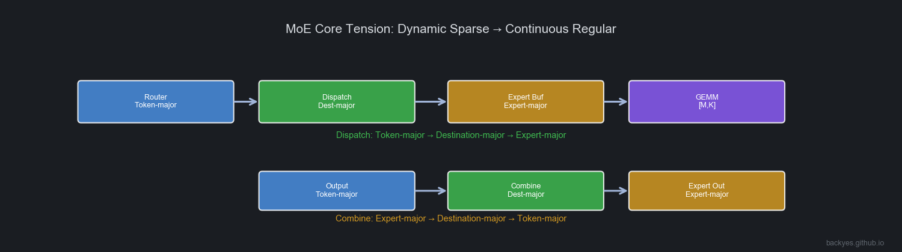
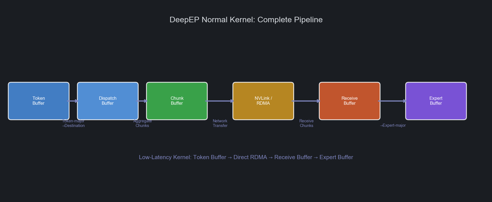
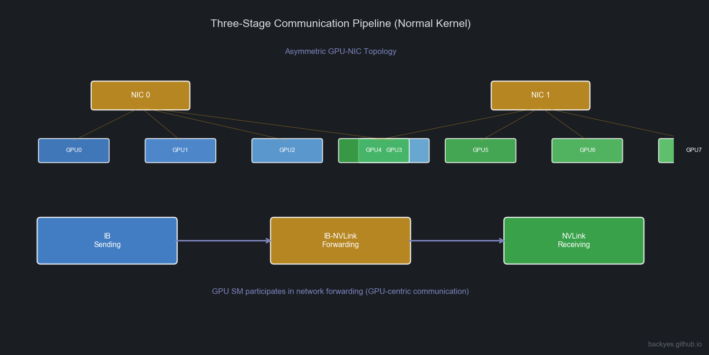
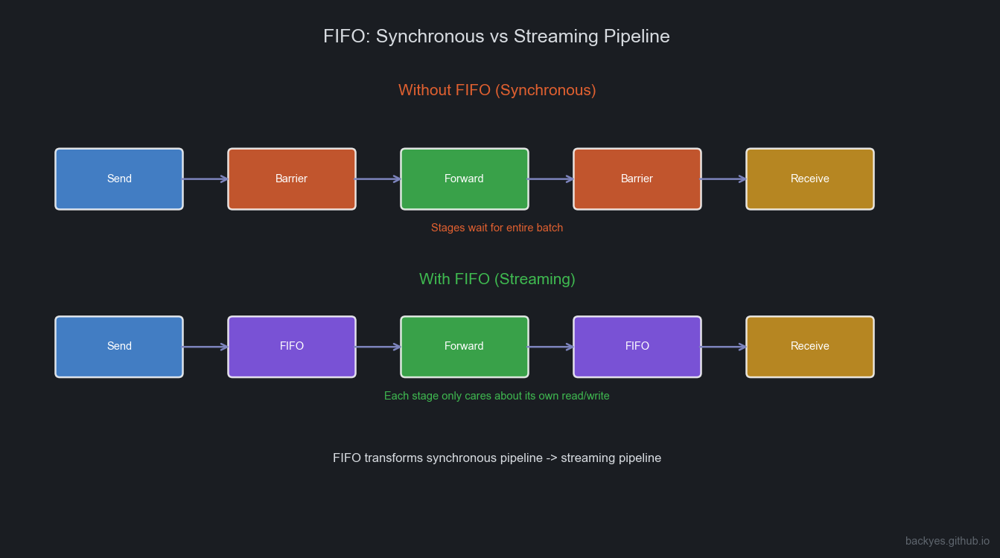
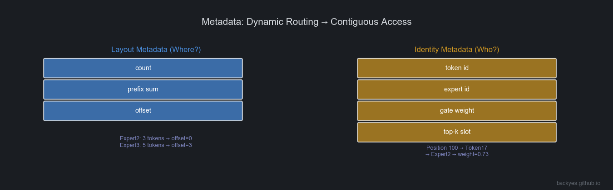

Introduction: Re-understanding DeepEP
In many descriptions, DeepEP is simply characterized as:
"A high-performance All-to-All communication library for MoE."
This is not wrong, but it fails to explain why MoE communication became a core bottleneck, and why DeepEP needs complex kernels, buffers, and Warp pipelines.
From a first-principles perspective, MoE's real challenge is not "how to send data from GPU A to GPU B."
The truly difficult problem is:
How does the dynamic sparse Token-Expert mapping produced by the Router get transformed into data layouts that both GPU communication hardware and Tensor Core compute hardware can process efficiently?

The Router outputs Token → Expert>, but:
- The network wants Destination-major
- Expert GEMM wants Expert-major
- The next Transformer layer still wants Token-major
Every MoE Layer must perform a dynamic data layout transformation.
DeepEP is not primarily a complete MoE Runtime — it is a Runtime specialized in solving MoE Expert Parallelism data movement problems.
It connects:
Router → DeepEP → Expert Buffer → Expert GEMMA more accurate definition:
DeepEP is a MoE-oriented Data Movement Runtime that transforms dynamic sparse Token flows into continuous data flows that Expert computation can consume, through data layout transformation, communication pipelining, and asynchronous scheduling.
1. Dispatch / Combine: Dynamic Data Layout Transformation
1.1 Why Does MoE Need Dispatch?
In ordinary Transformers, input naturally maintains Token-major layout. But in MoE, the Router dynamically selects Experts per Token:
T0 → E2, E7
T1 → E1, E5
T2 → E7, E3GPU modules need different layouts.
Communication Phase Wants Destination-major
GPU communication asks: which GPU should this data go to? Communication needs data organized by destination for contiguous sends.
Expert GEMM Wants Expert-major
Expert GEMM wants data organized by Expert — a continuous [M, K]> matrix for Tensor Core.
Therefore, Dispatch performs:
Token-major → Destination-major → Expert-majorThis is not simple communication — it is a dynamic data layout transformation.
1.2 Combine: Expert-major Back to Token-major
After Expert computation, output remains Expert-major. The next layer needs Token-major. Combine reverses:
Expert-major → Destination-major → Token-majorWhile recovering Router semantics:
Output(T0) = 0.73 × Expert2(T0) + 0.27 × Expert7(T0)Combine is data layout recovery + semantic recovery.
2. DeepEP Buffer System: Data Flow Organization Under Different Kernels
DeepEP does not use identical data paths in all scenarios:
- Training / Prefill care about throughput
- Decode cares about latency
2.1 Normal Kernel: Throughput-Optimized Complete Pipeline

Data path:
Token Buffer → Dispatch Buffer → Chunk Buffer → NVLink / RDMA Pipeline → Receive Buffer → Expert BufferToken Buffer: Stores Router output. Layout: Token-major.
Dispatch Buffer: First layout transformation: Token-major → Destination-major.
Chunk Buffer: Critically important. The network is unsuitable for single-Token sends — produces small packets, high startup overhead, low bandwidth utilization. Tokens are aggregated:
Token Stream → Chunk → Network TransferToken is the scheduling granularity; Chunk is the communication granularity.
Receive Buffer: Destination GPU receives Chunks from multiple GPUs.
Expert Buffer: Final transformation: Destination-major → Expert-major, forming Expert GEMM input.
2.2 Low-Latency Kernel: Decode-Oriented Short Path
Decode: small batch, few Tokens, single-Token latency sensitive. Waiting for Chunk aggregation increases latency.
Low-Latency Kernel reduces intermediate layers:
Token Buffer → Direct RDMA → Receive Buffer → Expert BufferGoal: minimize end-to-end Token latency.
3. Normal vs Low-Latency: Two Communication Philosophies
| Normal Kernel | Low-Latency Kernel | |
|---|---|---|
| Primary Scenario | Training / Prefill | Decode |
| Goal | Maximize throughput | Minimize latency |
| Core Tension | Bandwidth | Latency |
| Chunk | Critical | Reduced |
| Pipeline | Deep | Shallow |
| Communication Path | NVLink + RDMA coordination | Direct RDMA |
3.1 Normal Kernel: Communication Pipelining
In multi-GPU nodes, GPU-NIC topology is not fully symmetric. Communication paths may include:
IB Sending → IB-to-NVLink Forwarding → NVLink ReceivingForming a three-stage communication pipeline.
4. Intra-node / Inter-node Coordination: NVLink Scale-up + RDMA Scale-out
4.1 Topology & First Principles
In multi-node MoE (e.g., 2 nodes × 8 GPUs = 16 GPUs), a Token may stay local, go to another GPU on the same node, or go to a remote node. A single Dispatch contains two communication domains:
Token
|
+-------+-------+
| |
v v
Intra-node Inter-node
NVLink RDMA
| |
GPU-GPU GPU-NIC-GPUTraditional design views GPU → PCIe → NIC → Network> as external communication. But in AI Supercomputers, the cluster is GPU Memory Fabric + Network Fabric>. DeepEP's core idea: based on Token destination, fuse NVLink and RDMA into a continuous dataflow path — not "first NVLink, then RDMA."
4.2 Three-Stage Pipeline & Role Division
In multi-GPU nodes, GPUs and NICs are not one-to-one bound. GPU0 to NIC1 may need GPU0 → NVLink → GPU4 → PCIe → NIC1>. Communication becomes: GPU → NVLink domain → NIC → RDMA → NVLink domain → GPU>.
Normal Kernel divides into three roles:
Source GPU → IB Sending → RDMA Network → IB-to-NVLink Forwarding → NVLink Receiving → Target GPU- IB Sending: GPU memory → NIC (reads Dispatch Buffer, organizes RDMA packets)
- IB-to-NVLink Forwarding: Solves NIC-GPU topology mismatch. GPU acts as communication relay:
Receive from NIC → Forward through NVLink → Target GPU> - NVLink Receiving: Target GPU receives from NVLink, writes to Receive Buffer
If separated (GPU only computes, NIC handles communication), all traffic goes through PCIe — a bottleneck. DeepEP adopts GPU-centric communication fabric: NVLink + RDMA + GPU SM> together form the data path.
4.3 Dynamic Scheduling & Evolution
Does certain GPU bear more pressure? Yes — but DeepEP uses dynamic communication task assignment, not fixed roles. Runtime arranges based on Token distribution, Expert placement, and NIC topology. Three mechanisms prevent overload:
- Multi-Channel: Multiple communication channels, each with its own Warps + Buffer
- Dynamic Warp Allocation: Forwarding stage adds/removes Warps based on load
- Chunk Streaming: Chunks flow through without waiting for entire Batch
Why Low-Latency Kernel bypasses Forwarding? Decode has few Tokens per request. Each hop (GPU → NVLink Forward → NIC → RDMA>) adds latency. Low Latency prefers GPU → Direct RDMA → GPU>.
DeepEP's key innovation is not just optimizing All-to-All, but fusing intra-node NVLink Scale-up Fabric and inter-node RDMA Scale-out Fabric into a unified dataflow channel — letting GPU SMs, NVLink, NICs, and RDMA all participate in Token dataflow scheduling.
5. Warp Specialization: Pipelined Execution Inside the Communication Kernel
Warp Specialization in DeepEP is not about GPU role assignment or SMs dedicated to compute/communication. It is primarily used for parallelizing different stages within the communication Kernel.

Different Warp Groups handle:
Warp Group A: IB Sending
Warp Group B: IB-NVLink Forwarding
Warp Group C: NVLink ReceivingForming: Send → Forward → Receive>
6. FIFO: From Synchronous to Streaming Pipeline

Without FIFO: before the previous stage completes, the next stage must wait:
Send → Barrier → Forward → Barrier → ReceiveInefficient.
With FIFO:
Send → FIFO → Forward → FIFO → ReceiveEach stage only cares about its own write/read. No need to wait for the entire Batch.
FIFO's essence: transforms the communication pipeline from synchronous execution to streaming execution.
7. Metadata: How Dynamic Routing Becomes Contiguous Access

Two analytical abstractions. Note: Layout Metadata / Identity Metadata are not official DeepEP source code terms — they are conceptual models proposed for understanding MoE Runtimes.
6.1 Layout Metadata: Where Should Data Go?
Core question: Where?
Describes data layout. Typical information: count, prefix sum, offset.
Expert2: 3 tokens → offset=0
Expert3: 5 tokens → offset=3Then: dst = prefix[expert]++> completes contiguous writes.
Solves: dynamic mapping → contiguous addresses.
6.2 Identity Metadata: Who Is This Data?
Core question: Who?
Describes Token identity. Includes: token id, expert id, gate weight, top-k slot.
Position 100 → Token17 → Expert2 → weight=0.73During Combine:
Token17 = 0.73 × Expert2 + 0.27 × Expert78. Key Details in MoE Runtime
7.1 Does Sort Exist?
Yes, but not traditional sorting. Core process: Count → Prefix Sum → Scatter>
Essentially Counting Sort / Bucketization. Goal: produce contiguous layout, not sort by size.
7.2 Why Must Top-K Information Be Preserved?
MoE is Top-K Experts per Token. Combine must know: which Experts, corresponding weights, ordering. Top-K slot information must be preserved.
7.3 Why Is Memory Reorganization Unavoidable?
Three stages are inherently different: Communication (Destination-major), Compute (Expert-major), Model (Token-major). Rearrangement is a necessary transformation produced by MoE architecture. The optimization direction is not to eliminate it, but to make data rearrangement, communication, and computation as pipelined as possible.
9. From DeepEP to Mega MoE: MoE Runtime Evolution
DeepEP solves Communication + Data Movement. System trends are further fusing Communication + Compute.
In DeepGEMM, Mega MoE Kernel targets Blackwell SM100, fusing:
Token Routing → Dispatch → Linear1 → Activation → Linear2 → CombineDistinction:
- DeepEP: MoE Data Movement Runtime
- Mega MoE: Communication + Compute Fusion Runtime
10. Summary: DeepEP's True System Significance
How to transform dynamic sparse Token-Expert dataflows into continuous dataflows that GPU hardware prefers.
Core mechanisms: Dispatch / Combine, Data Layout Transformation, Buffer Pipeline, Chunk Streaming, FIFO Stage Decoupling, Warp Specialization, Metadata-driven Mapping.
Router → Token-Expert Stream → DeepEP (Data Movement Runtime) → Expert Buffer → Expert GEMM → CombineFurther evolution: DeepEP + DeepGEMM + Fusion Kernel → Unified MoE Dataflow Runtime>
DeepEP represents MoE systems' evolution from "communication optimization" to "dataflow execution."
It solves a fundamental problem: How to make dynamic sparse AI workloads ultimately flow into the continuous compute streams that GPUs excel at processing.
Analysis based on DeepEP paper and source code, CUTLASS documentation, and NVIDIA NVLink/RDMA architecture. Views are my own.
© 2026 backyes · Created by backyes